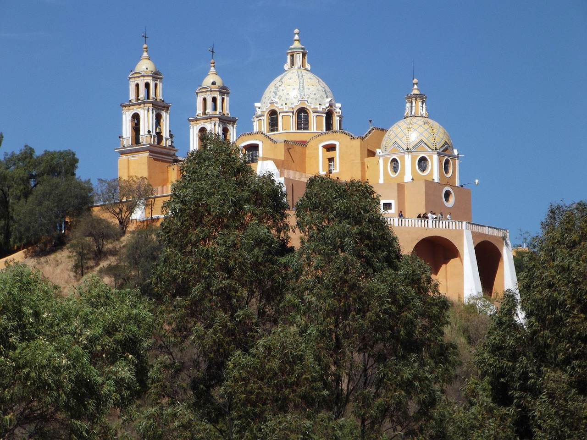
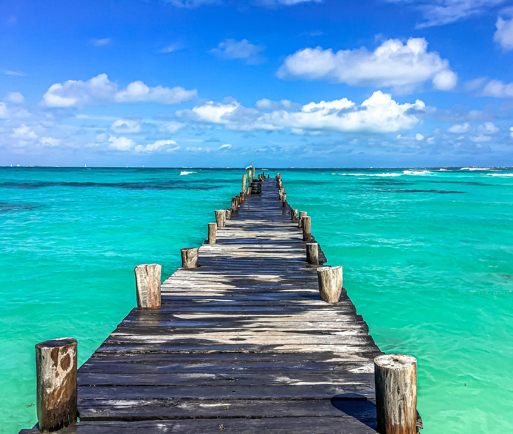

Ciudad de Puebla
Recorrido por puntos icónicos como Cholula, visitas la Estrella de Puebla, visitas a empresas destacadas como: Grupo Bimbo, Yakult y Agroparque.
Duración: 3 días
Guadalajara - Jalisco
Visita a 3 tequileras de renombre, al rancho "Los 3 potrillos" y de paso a Guanajuato.
Duración: 3 días

Cancún
Explora lagunas, islas y disfruta de la riqueza natural y cultural del sur del estado.
Duración: 5 días
Queretaro
Visita a la empresa FREIXENET MÉXICO, degustaciones de vino y sitios magicos en Tequisquiapan, Queretaro
Duración: 3 días
Mérida, Yucatan
Hospedaje en el centro de Mérida, visia Chichenitzá y empresas de talla nacional.
Duración: 3 días